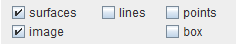
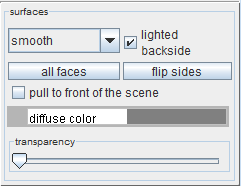
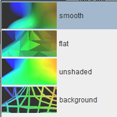
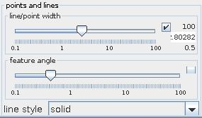

|
|
|
GEOMETRY PANEL
Geometry panel is responsible for setting the properties of the visible geometry. Geometrical contents and appearance can be maniupulated.
Geometrical content check boxes

Depending on the type of the mapped field switch on/off particular geometrical elements of the output geometry object using checkboxes with the options surface, lines, points and image.
The option surfaces draws the surface representation of the geometry, usualy via the triangulated surface in the three dimensional space. The appearance of the surface can be manipulated through the Surface representation panel. This option is visible only in the Viewer3D module.
The option lines draws the edges of the mapped geometry represented by line segments in the three or two dimensional space. The appearance of the lines can be manipulated in the Points and Lines representation panel. This option is visible both in the Viewer3D and Viewer2D modules.
The option points draws the nodes of the mapped geometry represented by points in the three or two dimensional space. The appearance of the points can be manipulated in the Points and Lines representation panel. This option is visible both in the Viewer3D and Viewer2D modules.
The option box draws the lined box aroud the whole field extents, representing the outer box in the directions x, y and z. This option is visible both in the Viewer3D and Viewer2D modules.
The option image draws the image-like interpretation of the data in the two dimensional space. This option is visible only in the Viewer2D module.
Surface representation panel

Surface representation panel allows to maniupalte the appearance of the surface in a 3D viewer. It consists of shading drop down list, backside checkbox, faces multistate button, flip sides button, pull checkbox, diffuse color slider and transparency slider.
The shading drop down list allows to choose the model of surface shading. One of the following options is available: smooth, flat, unshaded, background. The drop down menu also shows the example images of the available modes.

Smooth shading option gives the best quality of light rendering on the surface, interpolating the smooth surface shape.
Flat shading option sets a single direction of a surface for each triangle, such that each of the triangles is represented as a flat surface.
Unshaded option turns off the shading on this surface. Each triangle is represented only by the color.
Background shading option enables to render the trinagle surface with the background colour, allwing a nice and intuitive view of grid lines. It is usually more useful than the simple line representation as only the front lines are rendered.
The lighted backside checkbox allows to set if the surface is reacting to light from both sides (checked) or only from the front side (unchecked). By default all surfaces are reacting to light from both sides.
The faces multistate button allows to switch between one of three options: all faces, front faces and back faces. It selects which side of the surface is visible. If all faces (default) is selected, both faces fron the front and from the back side are visible. If front or back faces is selected only this side of the faces is rendered.
The flip sides button changes the orientation of the surface resulting in switching between front and back faces.
The pull to the front of the scene checkbox allows to select if the object is rendered normally or is rendered on the top of the whole rendering stack, being visible at the front of the scene.
Diffuse color slider allows to choose the color (by clicking the slider) and brightness (by dragging the slider) of the diffusive color of the surface.
The transparency slider is used to adjust transparency of a surface. HINT: use large values of transparency to avoid rendering artifacts.
Points and Lines Representation panel

The line/point width slider changes the line width or point size. If checkbox on right hand side is on the user is able to change minimum, maximum and current value.
In case of irregular fields lines connecting triangles are drawn if the angle between the triangles (normals ?) is above the value in feature angle slider. If checkbox on right hand side is on the user is able to change minimum, maximum and current value.
The line style drop down list allows to choose between solid, dashed, dotted, dashdot. Default is solid.